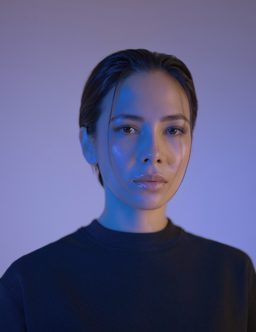
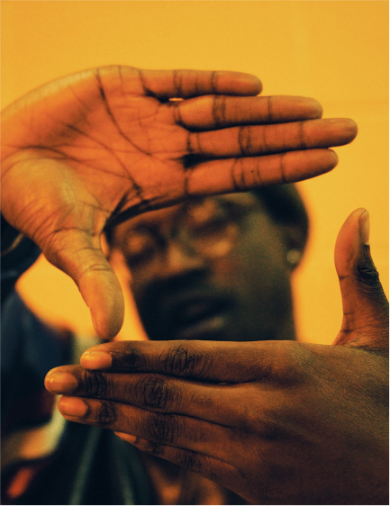
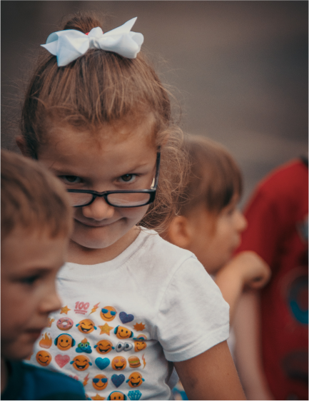
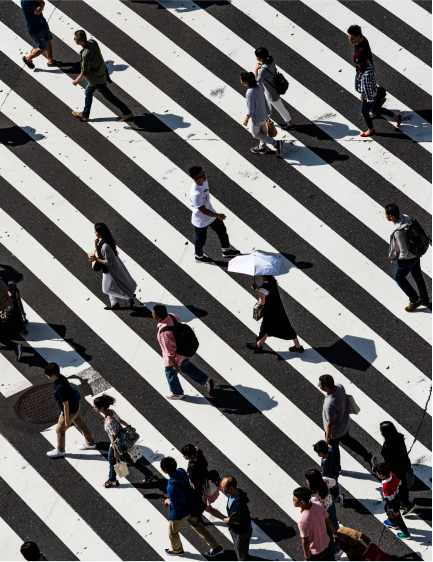
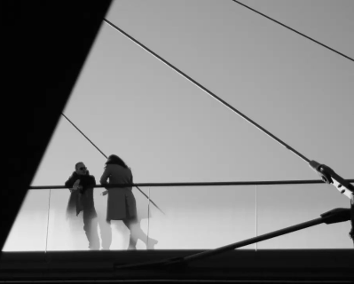
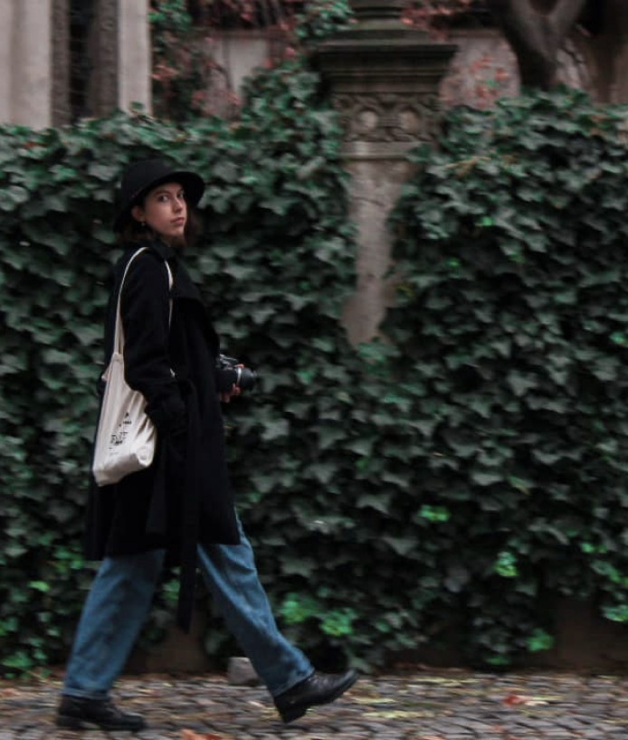

- 
-
2020
-
IS A STREET PHOTOGRAPHER BASED IN BUCHAREST
-
I am a conceptual photographer from the Republic of Moldova, based in Bucharest. As a photographer, my fields are portraiture and documentary. By having an interest in the human soul and its interactions with the inner and outer world, I focus on the notions of sincerity and intimacy.
-
CHECK THE GALLERY
